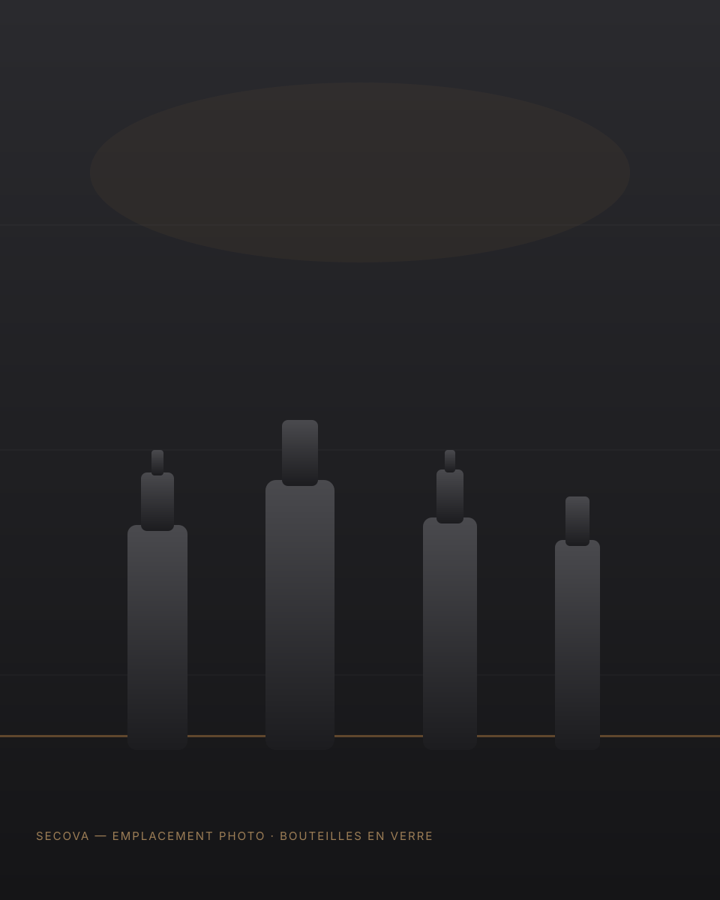
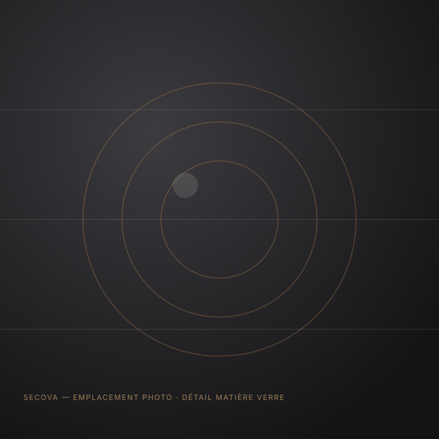

Des bouteilles en verre adaptées à chaque marché
Bière, boissons gazeuses, eau, spiritueux, jus et soft drinks, produits alimentaires : SECOVA vous aide à identifier le contenant et le fabricant les plus adaptés à votre produit, à vos volumes et à vos contraintes industrielles.

Des bouteilles pour tous les usages
Chaque secteur a ses propres exigences en matière de résistance, de format et de présentation. Nous couvrons l'ensemble des grandes familles du marché.
Formats standards ou développements spécifiques
Bouteilles bière
Formats consignés ou perdus, cols couronne ou capsulés, verre teinté adapté à la protection contre la lumière.
Boissons gazeuses & eau
Bouteilles résistantes à la pression, formats variés, adaptées aux lignes d'embouteillage à haute cadence.
Bouteilles spiritueux
Contenants valorisant le produit, formats et finitions travaillés, options de décoration selon les projets.
Jus & soft drinks
Bouteilles adaptées aux process de remplissage à chaud ou à froid selon la nature du produit conditionné.
Bouteilles alimentaires
Huiles, vinaigres, sauces liquides et autres produits nécessitant un contenant en verre adapté à l'usage alimentaire.
Développements spécifiques
Pour les projets nécessitant un format, un poids ou une identité visuelle particulière, hors gamme standard.
Le choix de la couleur répond à des enjeux techniques
Le verre brun, le verre blanc (flint) et le verre vert sont les teintes les plus courantes ; d'autres teintes peuvent être étudiées selon les projets.
Le choix du poids, du format, de la teinte, du col et de la résistance mécanique dépend directement du produit conditionné, de sa sensibilité à la lumière et des contraintes de votre ligne de production. Nous vous aidons à arbitrer entre ces paramètres.

Un besoin en bouteilles à étudier ?
Décrivez-nous votre produit, votre volume et vos contraintes : nous identifions la solution la plus adaptée.